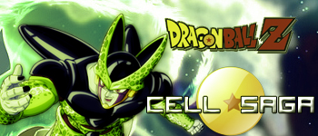

Dragon Ball Kai Online

1: Talk with Tenshin, south-west small city.
Porozmawiaj z Tenshinem na dolny zachod od small city.
2: Fight with Freeza Metal form.
Pokonaj Metal Freeza.
3: Talk with Future Trunks.
Porozmawiaj z Trunksem z przyszlosci.
4: Fight with c19.
Pokonaj C19.
5: Fight with c20.
Pokonaj C20.
6: Find Gero's Laboratory and talk with C17.
Znajdz tajne laboratotium i porozmawiaj z C17.
7: Find and Fight with Cell First Form.
Znajdz i pokonaj pierwsza forme Cell'a.
8: Find and Fight with C17.
Znajdz i pokonaj C17.
9: Fight with Cell Second Form.
Pokonaj druga forme Cell'a.
10: Talk with Future Trunks in Kame-House.
Porozmawiaj z Trunksem w domu Genialnego Zolwia.
11: Go to Cell's Budokai and Fight with him.
Idz na Turniej Cell'a i pokonaj Go.
|